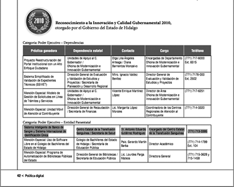
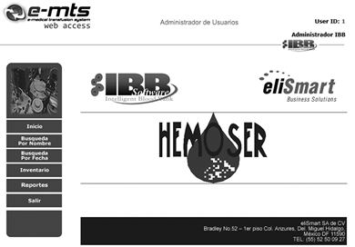
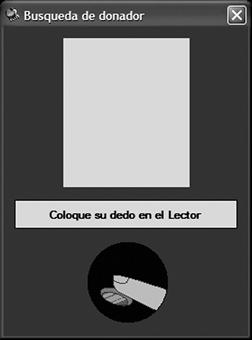
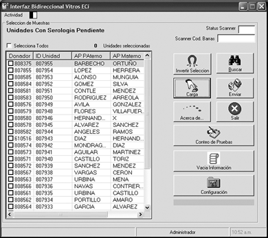
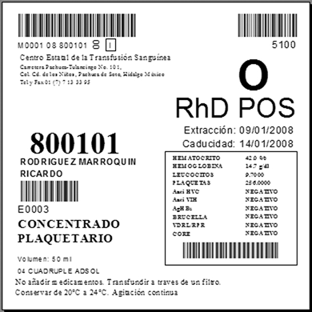

Ibb software

DESCRIPCIÓN:
Líderes en administración y automatización de bancos de sangre, puestos de sangrado y servicios de transfusión.
Nuestra amplia experiencia en el mercado trabaja para usted, ofreciendo seguridad y confidencialidad, siempre apegándonos a los nuevos cambios de la NOM.
Asimismo el sistema IBB fue acreedor al premio por innovación tecnológica en el estado de Hidalgo, donde trabajamos en conjunto con el Centro Estatal de la Transfusión Sanguínea para implementar el programa de sangre segura.
El sistema IBB SOFTWARE es un sistema desarrollado en México, basado siempre en la NOM vigente. De arquitectura cliente/servidor, trabajando en ambiente Windows, totalmente hecho en español y desarrollado siempre pensando en el usuario final.
La flexibilidad con la que se desarrolló el sistema permite adaptarlo al trabajo del banco de sangre para que el tiempo de aprendizaje sea menor, ya que el personal seguirá haciendo sus tareas dentro del sistema de la misma forma que lo hacen manualmente, pero con la seguridad de que siempre se trabajará dentro de la normatividad.
CARCTERÍSTICAS:
Al ser un desarrollo propio podemos crear nuevas soluciones o modificarlo para que se integre fácilmente a sistemas hospitalarios, expedientes electrónicos, etc.

El uso de tecnologías como lectores de códigos de barras, captura de huella digital, fotografía digital del donador y alarmas visuales y sonoras, aseguran al máximo la calidad del servicio proporcionado a donadores y pacientes.

Además, el sistema IBB SOFTWARE, está interfazado a todas las áreas del banco de sangre, de forma unidireccional, bidireccional o Host-Query de acuerdo con las capacidades de los instrumentos, disminuyendo al máximo el error humano al transcribir los datos.

Módulos adicionales del sistema como el uso de terminales portátiles para toma de inventario físico, autoexclusión por huella digital.
Además, estamos acreditados para el uso del estándar ISBT 128, para identificación y nomenclatura de las unidades obtenidas.

Módulos del sistema
• Donadores
– Alta de donador
– Donadores recurrentes
– Historia clínica
– Serología
– Hematología
~ BH
~ Grupo y RH
~ Fenotipo
– Exploración física
– Registro de unidades
– Registro de Reacciones Adversas a la Donación (RAD)
– Impresiones
– Búsqueda
• Pacientes
– Alta
– Análisis para el paciente
– Datos opcionales
• Fraccionamiento
– Verificación de grupo y RH
– Fraccionamiento
– Pools de unidades
• Solicitud de unidades
– Alta de solicitudes
– Pruebas de compatibilidad
– Egreso de componentes
• Inventario
– Reingreso de componentes
– Histórico de movimientos
– Búsqueda de unidades
~ Por tipo de componente
~ Por grupo y Rh
~ Por fenotipo
~ Por número de unidad
• Bajas de unidades
– Manual
– Automática a través de interfaz con analizadores
– Con lector de código de barras
• Almacén de reactivos
– Control por proveedor
– Fabricante
– Producto
– Caducidades
• Pruebas especiales para donador y paciente
– Fenotipos eritrocitarios
– Rastreo y búsqueda de anticuerpos
• Entradas de otros bancos
– Entradas automáticas por red
• Reportes
– Reportador
– Informe mensual SSA
• Control de calidad
– Graficas de Levey-Jennings
– Graficas de Youden
– Reglas de westward
Módulos Adicionales
• Pagina web de consulta para las unidades que estén en red
– Consulta web de inventarios de sus bancos de sangre y puestos de sangrado
– Búsqueda de donadores
~ Por nombre
~ Por fecha
• Uso de estándar ISBT128 para identificación de unidades de sangre y tejidos
• Terminales portátiles para recolección de inventario
• Versión del sistema IBB para campañas de donación
• Autoexclusión electrónica (uso de lector de huella digital y dispositivos tipo Touch)
• Interfaces a sistemas hospitalarios (HIS)
• Mensajería HL7.
DATOS COMPLEMENTARIOS: Para mayor información, asesoría técnica y pedidos favor de comunicarse a:
Teléfono: (55) 5250-0927
Lada sin costo: 01800 252-6473
correo electrónico: i_brito@elismart.com.mx
www.elismart.com.mx
ELISMART, S. A. de C.V.